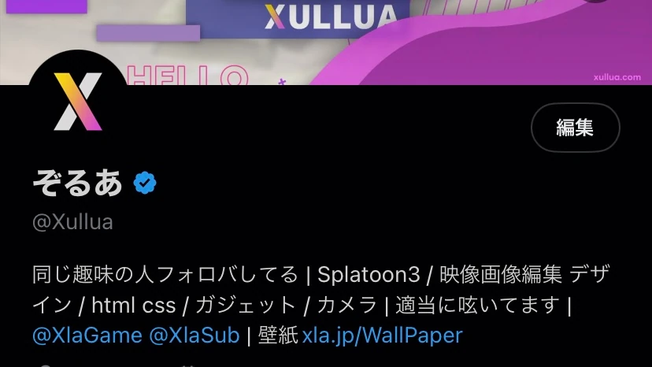
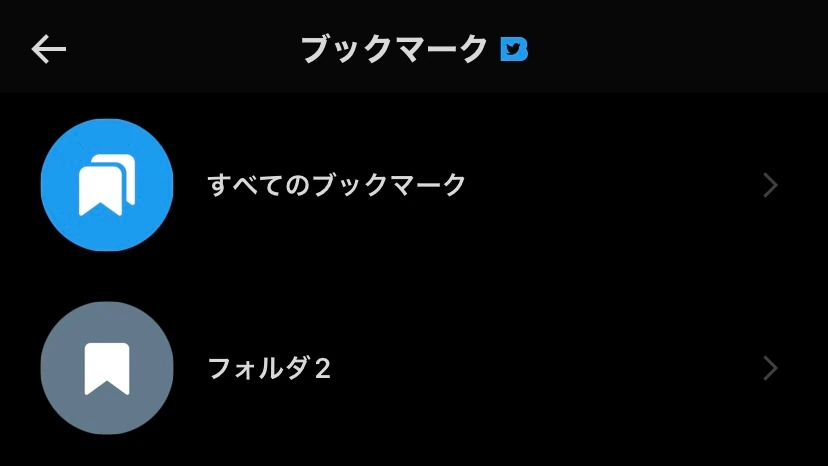

TwitterBlueとは
Twitterが提供するサブスクリプションです。いまやどのサービスも安定的な収益を得れるとの理由からこの仕組みを導入していますね。
そんな中でTwitterはイーロンマスクに買収される前から一部の地域にサービスを提供していました。それが今回のイーロンマスク買収に内容が一新されたということです。
大まかな内容といえば優先的に新機能を使用できたり、認証されれば公式マーク(認証バッチ)が付与されたりします。一つ一つの機能をレビューしていきます。
値段は$8です。(米AppStoreは$11/日本AppStorehは¥1800)
日本から入る方法
今回はこの内容がメインではないので簡単に紹介します。(これにより損害を受けた場合は自己責任です。)
今回は日本のAppStore決済方法で支払っていきます。Kyashなどがあれば学生でも入れます。
1. 新しく地域をアメリカにしたAppleアカウントを作成する
2. VPN接続アプリを入れてアメリカからアクセスする
3. Twitterを開いて左のメニュー部分のTwitterBlueを押す*
4. サブスクボタンが出てきたところでいったんストップ
5. AppStoreを開き、米垢からログアウトし、日本のAppleアカウントに切り替える**
6. Twitterに戻ると日本円で表記されているので契約する
*出てこない場合は開きなおしたり、今回作ったアカウントで入れなおす
**日本のアカウントに予め残金または支払方法を追加しておく必要あり
実際に入ってみて各機能を使ってみた
お気に入りの機能から順に紹介していきます。
認証バッチ

大多数のツイ廃にとって憧れの公式マーク。お金を払えば貰えるようになりました。
ただTwitterによるアカウント審査があるのでサブスクしたとたん付与されるわけではありません。私の場合7日間もかかりました。
お金払ってるので早くついてくれないと勿体ないですね。ここは結構な不満ポイントです。
認証バッチがつくことでタイムライン上で目立ちより多くのインプレッションを得れると思います。
★★★★★
カスタムナビゲーション
スマホ限定の機能です
スマホ下部にはデフォルトで4つのホーム、検索、通知、DMがありますが、そこをカスタマイズして順番を並び変えたり、別のショートカットを追加したりできるというものです。
ホームとその他の1個で合わせて2個以上、全部で6個以下で設定できます。
私はDMと通知の位置を入れ替えてプロフィールを一番右に設定してみました。instagramを真似した感じです。
★★★★★
リーダー
最近ではスレッドを使用して長々と文を書き込むものが多いですが、それを1ページで見れるようにするものです。
Twitterでは投稿主が自身のツイートにリプをし、複数のツイートを含んだものをスレッドと呼びます。
いちいちスクロースしなくていいので少し便利です。
ただ有料機能の必要性は感じません。
★★★★★
アプリアイコン
スマホ限定の機能です
Twitterのアプリアイコンを変えれます。いくつか選択肢があるので選ぶだけです。ただそれだけ。
でも有料機能っぽい感じ
★★★★★
テーマ
スマホ限定の機能です
Web版では前々から使えたTwitterのテーマカラーを変えるものですね。デフォルトでは水色になっています。
URLやメンションなどワンポイントカラーがすべて変わります。
私はTwitter感のある水色をそのまま使用しています。有料機能感あって良いですが、Web版ではまだ課金して無いユーザーでも使えるので早く使えなくしないと価値は感じないですね。
★★★★☆
ブックマークフォルダ

既存のブックマークは追加すると全て同じところに追加されますが、それをフォルダごとに整理できるようになる機能。シンプルでいいですね。ブックマークを多用する人はめちゃくちゃ重宝しそうです。
★★★★☆
30分のツイートの編集
ツイートしてから30分以内であればツイートを1回だけ編集できるものです。いいねの数などは引継ぎながら修正した内容に変えることができます。
勘違いしている人がいた場合や誤字脱字をしているときに重宝します。
更新履歴も残るので見る側にとっても良いです。
★★★★★
ツイートの取り消し
ツイートをツイートしてから5秒から60秒の間送信まで猶予を与えるものです。
ツイートしてから「あ、ちょっとまったー！」とよくやる人にはいいかもしれませんが、私的に要りません。いちいち自分のツイートが開かれるのが鬱陶しい(普通はツイート前の画面に行く)ですし、取り消すことがまずありません。
★★★☆☆
長い動画をアップロード/1080pの動画
最大10分の動画を上げれるようになりました。既存は2分20秒(広告を使えば最大10分)でしたが気軽に長い動画をアップできるようになりました。
ただYouTuberには需要ありませんし微妙な気がしますが、噂によるとR18な界隈には需要があるそうです。ニュースによると今後最大60分になる可能性があるそうです。
1080pの動画に関しては4Kが流行り始めている時期的には優位ではないですし、これは誰でもアップできるようになっていいと思います。
てかTwitter令和なのにまだ画質悪い。流石に改善すべき。
★★★☆☆
話題の記事
フォローしているユーザーが今何を読んでいるのかが出てきます。
あんまり面白くないですね。というよりデザインが少し読む気力を湧かせてくれない気がします。改善の次第によってはいいものになりそうな気がします。
★★★☆☆
NFTプロフィール画像
あるに越したことはないと思いますが、あんまり必要性を感じないですね。外部のウォレットを使用する必要があり、あまり理解していない私にとってはめんどくさいこの上ありません。
超個人的にはGIF画像設定したいですね。動かしたい！！
★★☆☆☆
まとめ
内容も微妙ですし、日本ですとYouTubeが1280円/月、Spotifyが980円/月、Amazonが500円/月と考えると、もし日本に上陸してきたときに$8から考えて¥1000ぐらいになると高すぎる気がしますね。
まぁ私は1800円/月を払ったんですけどね((破産☆
あまり充実した内容ではありませんでした。今後はコメントで上位に表示されたり、広告が50％減少などの機能が予定されているようです。
内容的には500円ぐらいを希望します。
Twitterに1000円払うならYouTubeプレミアムに入りますね笑